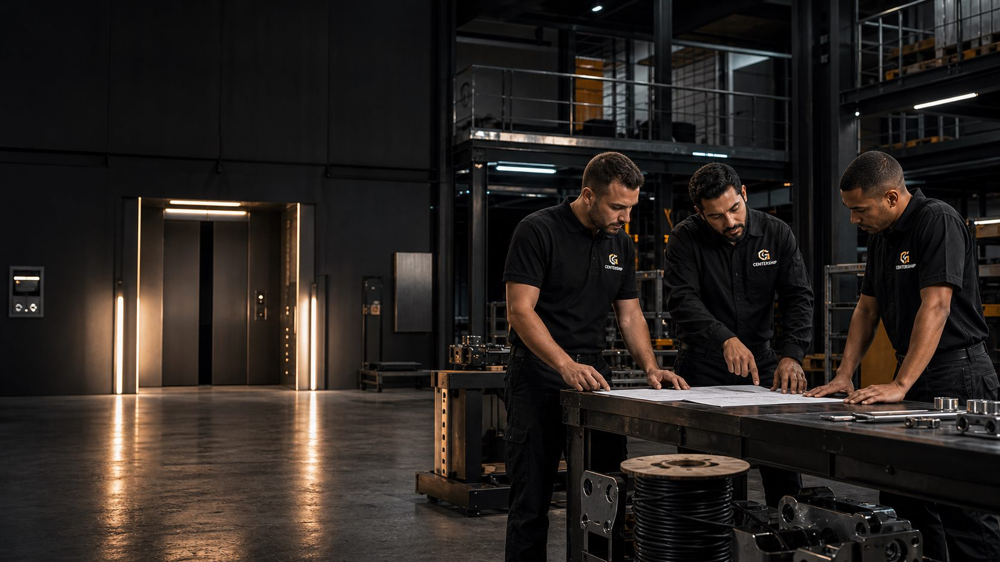
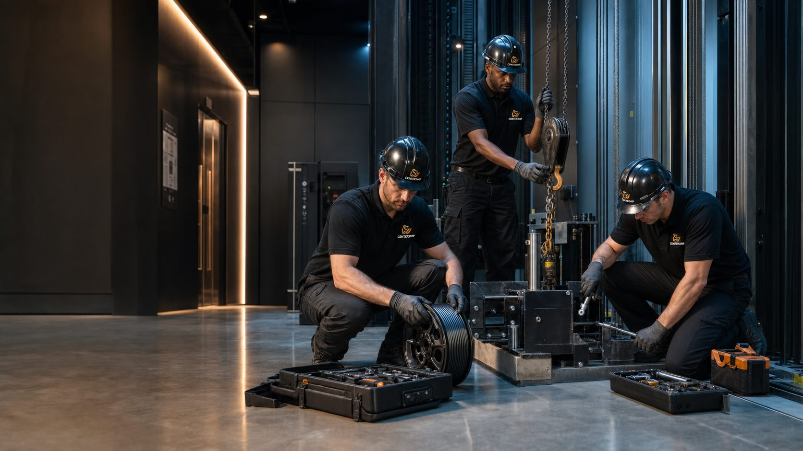
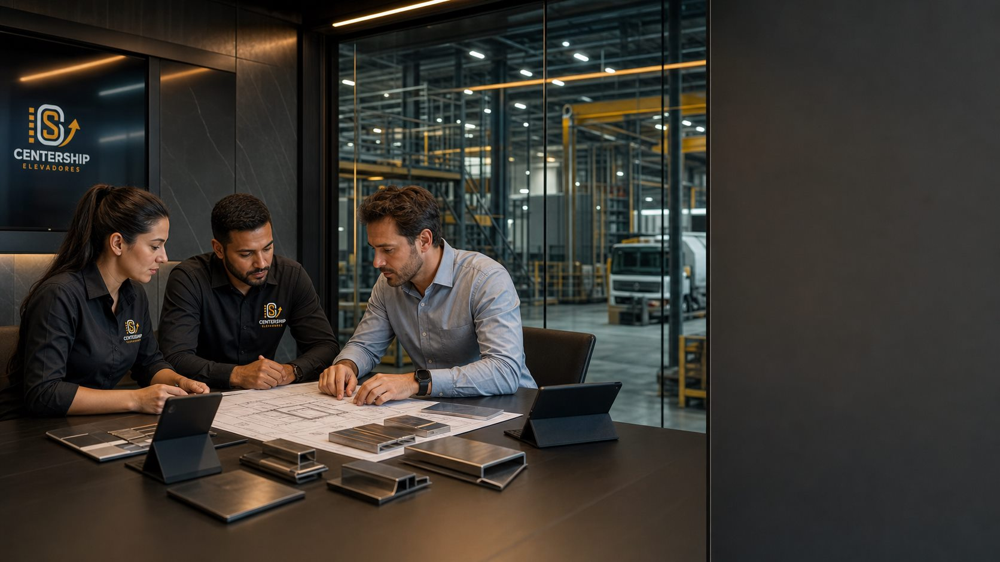

CenterShip | Rio de Janeiro
Controle técnico em movimento.
Desmontagem, remoção industrial e retirada de materiais ferrosos com leitura técnica, equipe de campo e execução controlada.
Reposicionamento CenterShip
Remoção industrial com controle de risco.
A CenterShip reposiciona desmontagem, remoção e retirada de materiais ferrosos como um serviço técnico de alta responsabilidade para construtoras, síndicos, engenheiros e administradores.
Video demonstrativo
A operacao real logo abaixo da abertura.
O video enviado vira a prova principal da primeira dobra: mostra ambiente tecnico, retirada, movimentacao e capacidade operacional antes da pagina entrar no posicionamento de marca.
Servico real em elevador, ferragens e ambiente tecnico.
Usado como demonstrativo comercial para reforcar equipe, processo, acesso, desmontagem e limpeza tecnica.
Leitura do local antes do preco
Acesso, interferencias, volume, risco, equipe necessaria e condicoes de retirada.
Sequencia tecnica de retirada
Elevadores, estruturas metalicas, cabos, bases, guias, maquinas e componentes.
Materiais com destino definido
Ferragens e equipamentos avaliados para remocao, reaproveitamento, compra ou venda.
Ambiente liberado e documentado
Fechamento com area organizada, alinhamento com responsavel e proximos passos claros.
Posicionamento da marca
De prestador operacional para parceiro técnico de decisão.
A CenterShip deve ser percebida como a empresa que entra quando o cliente precisa retirar, desmontar ou reorganizar infraestrutura pesada sem improviso, sem ruído e sem expor a obra a risco desnecessário.
Executar remoções e desmontagens industriais com método, segurança e clareza comercial.
O papel da marca é transformar operações complexas em decisões administráveis para quem responde por obra, condomínio, manutenção ou patrimônio.
Ser referência regional em retirada técnica de equipamentos, ferragens e estruturas metálicas.
No Rio de Janeiro, a marca pode ocupar o espaço de especialista confiável para serviços que exigem presença de campo e responsabilidade.
O arquétipo principal é o Governante técnico: controle, responsabilidade, ordem e autoridade sem exagero.
O tom deve ser direto, seguro e corporativo. Frases curtas, verbos de ação, linguagem de engenharia e foco em processo. Evitar promessas genéricas como "melhor preço" e preferir argumentos verificáveis: vistoria, escopo, equipe, acesso, remoção, limpeza e destinação.
SegurançaOperação planejada para reduzir exposição de pessoas, patrimônio e cronograma.
PrecisãoLeitura técnica do ambiente antes de prometer prazo, custo ou método.
ResponsabilidadeComunicação clara com síndicos, engenheiros, compras e administradores.
Força operacionalCapacidade de lidar com equipamentos, ferragens, cabos e estruturas pesadas.
TransparênciaProposta organizada por escopo, etapas, materiais e condições de execução.
Escopo comercial
Serviços apresentados como matriz técnica, não como lista solta.
O cliente precisa entender rapidamente o que a CenterShip remove, desmonta, compra, vende e organiza. A linguagem deve facilitar orçamento e qualificação do lead.
Desmontagem e montagem de elevadores
Retirada controlada de componentes, máquinas, cabos, guias, portas, estruturas auxiliares e materiais relacionados.
Remoção industrial de equipamentos
Desmobilização de máquinas, conjuntos metálicos e ativos técnicos em prédios, obras, galpões e instalações.
Estruturas metálicas, galpões e ferragens
Desmontagem de estruturas, retirada de materiais ferrosos e limpeza técnica após remoção.
Cabeamento e infraestrutura metálica
Remoção de cabos, suportes, trilhos, dutos, bases, tubos e componentes sem uso ou em substituição.
Compra e venda de materiais industriais
Avaliação de materiais e equipamentos com potencial de reaproveitamento, compra, venda ou destinação comercial.
Portfólio e prova de campo
A fotografia deve mostrar complexidade real, não obra cenográfica.
As imagens de serviço são um ativo importante: elas comunicam altura, peso, ambiente técnico e presença operacional. O tratamento visual deve ser limpo, contrastado e documental.


Nova linguagem visual
Imagens premium para serviços, diferenciais e páginas internas.
Os novos blocos mantêm a mesma atmosfera cinematográfica da hero: grafite, metal, luz âmbar, tecnologia discreta e equipe técnica como prova de capacidade operacional.



Identidade visual completa
Industrial premium: robusta, técnica e corporativa.
A identidade deve preservar reconhecimento do nome CenterShip, mas elevar o sistema: menos ornamento, mais grade, mais contraste, mais confiança.
Modernização sem excesso
Recomenda-se manter a força do nome CenterShip, simplificar símbolo e seta em uma marca técnica, reduzir elementos redundantes e criar versões horizontal, vertical e monocromática.
Grafite, aço e âmbar
Grafite para autoridade, aço para precisão, concreto para base operacional e âmbar como sinal de atenção, energia e movimento técnico.
Sans técnica com números fortes
Inter ou equivalente corporativa para clareza. Monoespaçada apenas em códigos de serviço, etapas, medições, rótulos e proposta comercial.
CenterShip não vende "retirada". Vende controle técnico sobre ambientes onde improviso custa caro.
Traço linear, industrial, sem ilustrações simpáticas. Usar pictogramas de eixo, gancho, viga, cabo, caminhão e checklist.
Grades técnicas, linhas de corte, coordenadas, blocos de processo e marcações de inspeção.
Ambiente real, equipe, máquinas, metal, concreto e antes/depois. Evitar banco de imagem genérico.
Proposta, uniforme, capacete, fachada, assinatura, apresentação e redes sociais com o mesmo sistema.
Método de execução
O processo é o principal argumento de confiança.
Para clientes técnicos, uma boa landing precisa vender previsibilidade. A CenterShip deve mostrar etapas antes de falar em preço.
Vistoria e escopo
Identificação do equipamento, área de acesso, risco, volume de material e interferências.
Plano de retirada
Definição de equipe, ferramentas, sequência de desmontagem, carga, isolamento e comunicação.
Execução técnica
Desmontagem, remoção, separação de material, limpeza da área e acompanhamento do responsável.
Fechamento
Registro da entrega, alinhamento de destinação e proposta para materiais com valor comercial.
Materiais corporativos
Um sistema para proposta, obra e presença institucional.
Reposicionar a marca exige que a linguagem visual apareça nos pontos de contato em que o cliente decide confiança: proposta, visita técnica, assinatura, uniforme e apresentação.
CenterShip
Proposta técnica
Remoção industrial programada
Cabeçalho discreto, rodapé técnico
Logo no topo, dados legais no rodapé, linha âmbar mínima e área limpa para escopo, condições e assinatura.
Orçamento com leitura de risco
Separar escopo, exclusões, prazo, acesso, equipe, materiais, destinação e condições de pagamento.
Presença de campo consistente
Camisa grafite, marca clara no peito, identificação de função e aplicação em capacete quando permitido.
Prova antes de propaganda
Posts com antes/depois, bastidores de segurança, checklist de síndico, explicação de materiais e cases regionais.
Estratégia digital
Captar demanda regional com autoridade técnica.
A presença digital deve organizar procura local por remoção, desmontagem, elevadores, ferragens e compra de materiais industriais no Rio de Janeiro.
SEO local
Criar páginas e blocos para "desmontagem de elevador no Rio de Janeiro", "remoção industrial RJ", "retirada de estrutura metálica", "compra de material ferroso" e bairros/regiões atendidas.
Google Meu Negócio
Publicar fotos reais de operação, categorias corretas, serviços separados, perguntas frequentes e posts semanais com obras executadas, sempre usando CenterShip.
Captação de leads
Formulário curto: tipo de serviço, local, fotos do ambiente, urgência e responsável. CTA principal para diagnóstico por WhatsApp quando o número for definido.
Autoridade setorial
Conteúdo técnico sobre preparação de área, remoção segura, reaproveitamento de materiais, riscos de desmontagem informal e checklist para condomínios e construtoras.

Flavio Luiz
Presenca de campo, leitura tecnica e relacionamento direto com responsaveis por obras, condominios e instalacoes industriais.
Sobre nos
Uma marca tecnica com lideranca visivel.
A CenterShip ganha mais confianca quando conecta sua operacao industrial a uma lideranca real. A imagem do fundador funciona melhor nesta area institucional, depois que o visitante ja viu a hero, os servicos e o demonstrativo de campo.
Depoimentos e confiança
Use validação real, sem frases fabricadas.
Até coletar depoimentos autorizados, a landing pode usar blocos de prova documental: fotos, tipos de cliente, responsáveis atendidos e registros de entrega.
Construtora ou engenheiro responsável
"O que deve aparecer aqui: cumprimento de prazo, organização da área e comunicação com a obra."
Síndico ou administrador
"O que deve aparecer aqui: segurança para moradores, limpeza posterior e clareza antes da execução."
Compras ou patrimônio
"O que deve aparecer aqui: avaliação de materiais, documentação do escopo e negociação objetiva."
FAQ comercial
Perguntas que reduzem atrito antes do orçamento.
Essas respostas devem ser mantidas curtas e orientadas para ação. A meta é levar o visitante à vistoria ou envio de fotos.
A CenterShip atende condomínios e obras em operação?
Sim. A comunicação deve ser alinhada com responsável técnico, administração ou síndico para definir horários, acesso, isolamento e sequência da retirada.
É possível avaliar materiais ferrosos ou equipamentos retirados?
Sim. Quando houver potencial comercial, a avaliação de materiais pode entrar no escopo de compra, venda ou destinação, conforme condição e volume.
Como solicitar orçamento?
O ideal é enviar local, fotos, tipo de material ou equipamento, acesso disponível e urgência. A CenterShip deve responder com necessidade de vistoria ou pré-escopo.
A marca deve continuar usando o foco em elevadores?
Elevadores continuam sendo um serviço importante, mas a nova marca deve comunicar um território mais amplo: remoção técnica, estruturas metálicas e materiais industriais.
Próximo passo
Inserir WhatsApp comercial
Transformar a operação da CenterShip em uma presença comercial de alto padrão.
Próximas informações a inserir: WhatsApp comercial, endereço, CNPJ, regiões/bairros atendidos, credenciais, depoimentos reais e fotos selecionadas de antes/depois.